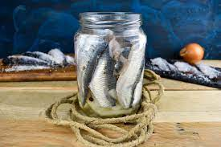

Odin Recipes
Pickled Herring

Pickled herring is a staple in Scandinavian cuisine and was enjoyed by Vikings as a preserved food source during long voyages.
Ingredients
- 1 lb fresh herring fillets
- 1 cup white vinegar
- 1 cup water
- 1/2 cup sugar
- 1 tbsp pickling spices (such as mustard seeds, allspice, and coriander)
- 1 small onion, thinly sliced
- 1/4 cup fresh dill, chopped
Instructions
- In a saucepan, combine the vinegar, water, sugar, and pickling spices. Bring to a boil, then reduce the heat and simmer for 10 minutes. Allow the pickling liquid to cool to room temperature.
- Layer the herring fillets, onion slices, and dill in a glass jar or container. Pour the cooled pickling liquid over the herring, making sure all the fillets are fully submerged.
- Seal the jar or container and refrigerate for at least 48 hours to allow the flavors to develop.
- Serve the pickled herring on rye bread or crispbread, or as part of a traditional Scandinavian smorgasbord.
Return To Homepage